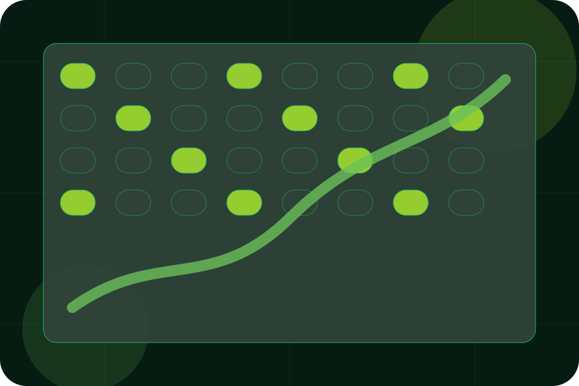

Questions / 01
Questions by Field
Questions shaped for agriculture, farming & rural business decisions.
Questions opens as a clear agriculture decision hub: what Field offers, who it helps, why it matters, and which route to take first.
The first screen combines positioning, proof, primary action, and fast internal navigation, so people can act immediately or compare the rest of the questions route with context.
Agriculture scopeCompare optionsRequest advice
Deep-green grow room hero
Plan the season
Select the closest route and Field keeps the next step, proof, and follow-up expectation aligned with seasonal timing and trust.

Questions / 02
Questions before you plan a visit
Delivery handles buying doubts directly so visitors can understand timing, fit, limits, and the safest next step.
Answers are short by design: enough to remove hesitation, not so much that the page turns into documentation before the visitor can act.
Explore QuestionsDelivery gives the page a specific angle instead of repeating the navigation label.
The growth metric cards show what to compare, what to avoid, and what matters most for agriculture, farming & rural business visitors.
The final cue points to a useful internal route so the section keeps the journey moving.
Questions / 03
Questions before you plan a visit
Seasonality handles buying doubts directly so visitors can understand timing, fit, limits, and the safest next step.
Answers are short by design: enough to remove hesitation, not so much that the page turns into documentation before the visitor can act.
Explore Questions- 01
Question
Seasonality gives the page a specific angle instead of repeating the navigation label.
- 02
Answer
The growth metric cards show what to compare, what to avoid, and what matters most for agriculture, farming & rural business visitors.
- 03
Next Step
The final cue points to a useful internal route so the section keeps the journey moving.
Questions / 04
Questions before you plan a visit
Fit handles buying doubts directly so visitors can understand timing, fit, limits, and the safest next step.
Answers are short by design: enough to remove hesitation, not so much that the page turns into documentation before the visitor can act.
Explore QuestionsField structures fit around question, answer, and a clear next route so visitors can compare the block quickly before they plan a visit.
Plan VisitQuestions / 05
Questions before you plan a visit
Visits handles buying doubts directly so visitors can understand timing, fit, limits, and the safest next step.
Answers are short by design: enough to remove hesitation, not so much that the page turns into documentation before the visitor can act.
Explore QuestionsQuestion
Visits gives the page a specific angle instead of repeating the navigation label.
Questions / 06
Compare service routes
Support explains the practical scope, best-fit situations, and expected outcome so agriculture visitors can compare options without decoding jargon.
The section keeps the offer concrete: what is included, who it is best for, what decision it supports, and which linked route gives the deeper detail.
Open ContactBest Fit
Who should use support and when it belongs in the questions journey.
What Changes
The practical benefit visitors should expect after choosing this route.
Deeper Route
Where to compare details, pricing, support, or contact options before committing.
Questions / 07
Compare scope and terms
Payment makes commercial comparison easier by showing fit, scope, and terms before agriculture visitors ask for the next step.
The layout keeps price-sensitive decisions honest: it separates starting scope, fuller delivery, and ongoing support so the visitor can ask a sharper question.
Explore QuestionsWho the offer is for, which scope it suits, and when a different route may be better.
What is included clearly enough for agriculture, farming & rural business visitors to compare value without hidden jargon.
The practical details that should be confirmed before someone asks to plan a visit.
Questions / 08
Questions before you plan a visit
Returns handles buying doubts directly so visitors can understand timing, fit, limits, and the safest next step.
Answers are short by design: enough to remove hesitation, not so much that the page turns into documentation before the visitor can act.
Explore QuestionsQuestion
Returns gives the page a specific angle instead of repeating the navigation label.
Answer
The growth metric cards show what to compare, what to avoid, and what matters most for agriculture, farming & rural business visitors.
Next Step
The final cue points to a useful internal route so the section keeps the journey moving.
Questions / 09
Questions before you plan a visit
Advice handles buying doubts directly so visitors can understand timing, fit, limits, and the safest next step.
Answers are short by design: enough to remove hesitation, not so much that the page turns into documentation before the visitor can act.
Explore QuestionsQuestion
Advice gives the page a specific angle instead of repeating the navigation label.
Answer
The growth metric cards show what to compare, what to avoid, and what matters most for agriculture, farming & rural business visitors.
Next Step
The final cue points to a useful internal route so the section keeps the journey moving.
Questions / 10
Plan Visit
Field closes the questions route with a clear action, a quick reminder of the value, and a low-friction way to plan a visit.
Visitors who are ready can use the primary action. Visitors who are still comparing can scan the section links, proof, and support routes before they plan a visit.
Plan VisitThe final block keeps the choice simple: act now, compare one more proof route, or send enough detail for a focused response.
Plan Visitseasonal timing and trust
Plan Visit
A controlled-agriculture site with vertical growing surfaces, yield metrics, season planning, and visit routes. Questions ends with a direct path to plan a visit, plus enough context for visitors who still need to compare.
Important notes before you act
Information is provided for planning and should be reviewed for the final client, location, and operating rules.